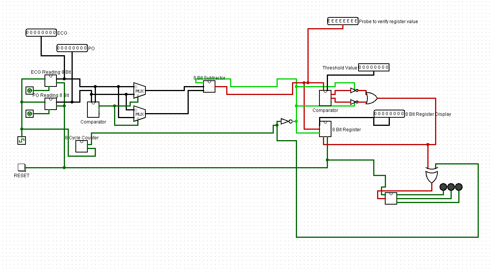
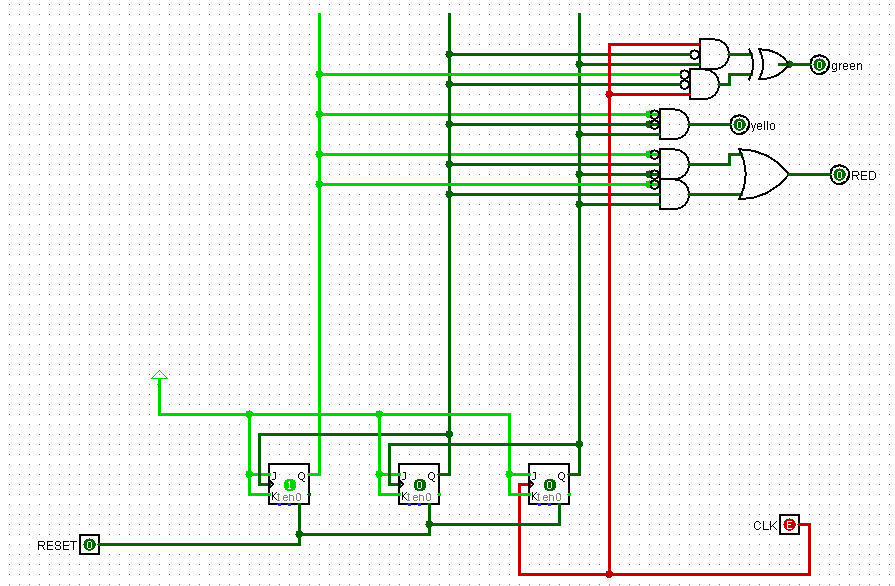

Two sensors, one question
An ECG measures the heart's electrical activity directly. A pulse oximeter estimates heart rate indirectly, from changes in light absorption as blood pulses through tissue. When both are attached to a patient, they should agree. A persistent disagreement suggests one of them is failing.
The brief was a digital system that compares the two readings and raises an alert only when the difference stays beyond a tolerance, rather than on a single noisy reading. It was designed and tested in Logisim simulation with chosen test inputs, not connected to physical sensors.
How the system is organised
The design follows the signal from serial input to alarm. A central redundancy monitor sits in the middle and does the comparison.
- ReceiveEach sensor's 8-bit value shifts in serially through eight D flip-flops on a shared clock.
- CountA three-flip-flop JK counter waits for all eight bits before enabling the comparison.
- SubtractA gate-level two's-complement adder-subtractor computes the difference between the readings.
- CompareAn 8-bit comparator checks the difference against the error threshold.
- StoreA parallel register captures the difference whenever it reaches the threshold.
- AlertA counter steps the LEDs from green to amber to red as exceedances repeat.

Design choices
Most decisions traded generality for fewer control signals and blocks that could be verified one at a time.
| Block | Choice | Reason |
|---|---|---|
| Shift registers | D flip-flops | One data input and only a reset to manage; a natural fit for serial-to-parallel conversion |
| Counter | JK flip-flops in toggle mode | Three flip-flops give the eight states needed, with few extra gates |
| Subtractor | Two's complement with XOR gates as controlled inverters | Reuses full-adder hardware for subtraction |
| Negative results | Comparator and multiplexer swap the inputs | The larger reading is always the one subtracted from, so the difference is never negative |
| Comparator | 2-bit stages built into 4-bit and 8-bit comparators | Most-significant bits take priority, and each level can be checked separately |

Testing each block
Each block was probed in simulation against expected outputs before the system was assembled.
| Block | Test | Result |
|---|---|---|
| Shift register | Eight clock cycles of serial input | Output shifted one bit per cycle exactly as expected |
| Subtractor | 11111111 − 00000000, and the reverse order | Both gave 11111111, so no negative values |
| Comparator | Greater, less and equal cases | All three identified correctly |
| Alarm | Four successive threshold exceedances | Green, then amber, then red, staying red |
All the tests passed, but they were functional checks with a handful of chosen inputs rather than exhaustive verification.
What I would add now
The tests show that each block works, but not where it might fail. I would now add boundary cases such as readings exactly at the threshold, timing diagrams showing when the enable signal fires, and a clear link from each requirement to the test that checks it.
I would also state the tolerance in beats per minute and explain where it came from. That clinical framing, which turns a logic exercise into a safety check, is what I later worked on directly in the regulatory and validation projects.
Project material
- Read the team reportPDF · 12 pages · Student IDs removed